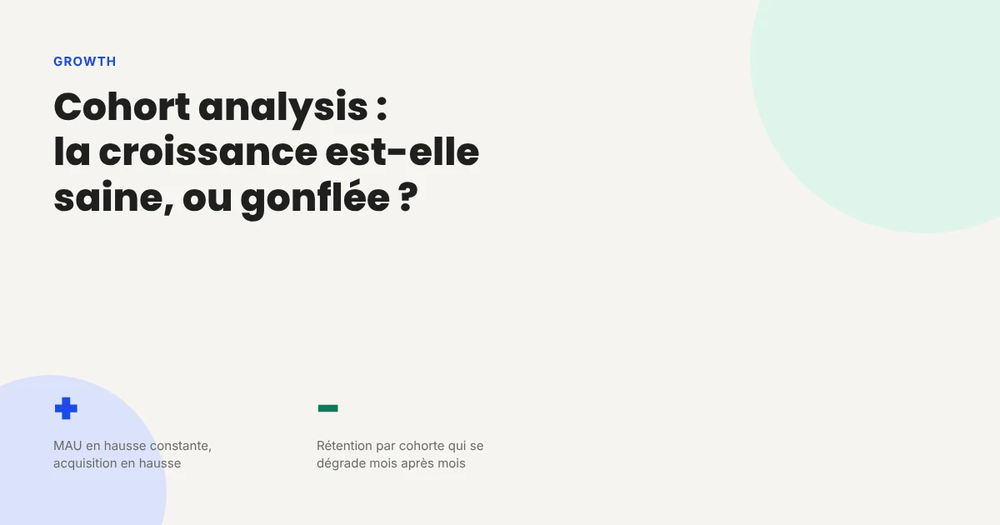

Cohort analysis : la méthode pour savoir si votre croissance est saine
Un nombre d'utilisateurs actifs qui monte chaque mois peut cacher un problème de fond : une rétention qui se dégrade cohorte après cohorte, compensée par une acquisition qui tourne de plus en plus vite. La cohort analysis est la méthode qui permet de voir cette différence, que les métriques globales ne montrent jamais.

Un tableau de bord qui affiche un nombre d'utilisateurs actifs mensuels en hausse constante donne une impression de croissance saine. Cette impression peut être fausse, et c'est précisément le piège que la cohort analysis est conçue pour détecter. Une cohorte regroupe les utilisateurs qui partagent un même événement de départ — typiquement la semaine ou le mois de leur première inscription — et les suit dans le temps en tant que groupe, séparément des cohortes arrivées avant ou après. Ce découpage change ce qu'on peut voir : un chiffre agrégé additionne des utilisateurs d'âges différents dans le produit, et masque mécaniquement toute dégradation qui se compenserait par un volume d'acquisition croissant.
Pourquoi le chiffre global peut mentir sans qu'aucune donnée ne soit fausse
Prenons un exemple illustratif, volontairement simplifié, pour rendre le mécanisme concret — ce ne sont pas des chiffres réels, mais une démonstration du principe. Une entreprise acquiert 1000 nouveaux utilisateurs par mois. En janvier, la cohorte de janvier retient 40 % de ses utilisateurs à 3 mois. En avril, la cohorte d'avril — plus nombreuse parce que l'acquisition a été renforcée entre-temps — ne retient plus que 25 % à 3 mois. Le nombre total d'utilisateurs actifs peut malgré tout continuer de monter d'un mois sur l'autre, simplement parce que le volume de nouveaux arrivants compense la moins bonne rétention de chaque cohorte individuelle. Du point de vue du tableau de bord global, tout va bien. Du point de vue de chaque cohorte, le produit retient de moins en moins bien ses utilisateurs — un signal d'alerte sur la valeur réelle livrée, que l'acquisition est en train de maquiller.
La courbe de rétention, et pourquoi sa forme compte plus que son point de départ
Visualisée par cohorte, la rétention se représente comme une courbe qui part toujours de 100 % au jour ou au mois de départ, et qui décroît ensuite. Ce qui distingue un produit sain d'un produit qui fuit n'est pas la vitesse de la chute initiale — presque tous les produits perdent une partie significative de leurs nouveaux utilisateurs dans les premières semaines — mais la forme de la queue de la courbe : une courbe qui finit par s'aplatir (le « plateau de rétention ») signale un noyau d'utilisateurs qui a trouvé une valeur durable dans le produit. Une courbe qui continue de décliner sans jamais se stabiliser signale l'absence de ce noyau, quel que soit le volume d'acquisition par ailleurs.
Les définitions à fixer avant de comparer deux courbes entre elles
Une courbe de rétention dépend entièrement de trois choix de définition qui doivent être explicites et constants pour que deux courbes soient comparables : la façon dont la cohorte est constituée (date d'inscription, premier achat, autre événement), ce qui compte comme « retenu » (une connexion, une action spécifique, un paiement), et l'intervalle de temps retenu (rétention à J+1, à 7 jours, à 30 jours). Deux équipes qui annoncent chacune « 60 % de rétention » sans préciser ces trois paramètres peuvent parler de deux réalités complètement différentes. La variante utilisée en SaaS B2B, la rétention nette de revenu (Net Revenue Retention), ajoute une nuance supplémentaire : elle pondère par le revenu plutôt que par le nombre de comptes, ce qui lui permet de dépasser 100 % si l'upsell sur les comptes existants compense le churn — une lecture très différente d'une rétention logo classique, et qu'il ne faut jamais comparer directement à elle sans le préciser.
Comment l'utiliser concrètement pour arbitrer entre acquisition et rétention
En pratique, la cohort analysis sert surtout à répondre à une question d'arbitrage budgétaire : faut-il investir le prochain euro en acquisition, ou en rétention ? Si les courbes de rétention des cohortes récentes se dégradent par rapport aux cohortes plus anciennes, continuer à pousser l'acquisition revient à remplir un seau de plus en plus percé — la priorité devrait aller à comprendre pourquoi les nouvelles cohortes décrochent (onboarding, adéquation produit-marché, qualité du trafic acquis) avant d'augmenter davantage le volume. Si au contraire les courbes récentes s'améliorent ou se maintiennent, l'acquisition peut être poussée avec une base de rétention qui justifie l'investissement supplémentaire.
FAQ
Qu'est-ce qu'une cohorte, exactement ?
Une cohorte regroupe les utilisateurs qui partagent un même événement de départ, le plus souvent la semaine ou le mois de leur première inscription ou premier achat. On suit ensuite ce groupe dans le temps, indépendamment des utilisateurs arrivés avant ou après, pour isoler son comportement propre de celui de l'ensemble des utilisateurs.
Pourquoi un nombre d'utilisateurs actifs en hausse peut-il cacher un problème ?
Parce que le nombre total d'utilisateurs actifs est une somme qui mélange plusieurs cohortes d'âges différents. Une acquisition suffisamment forte peut faire grossir ce total chaque mois même si chaque cohorte individuelle retient de moins en moins bien ses utilisateurs au fil du temps. Le total masque la tendance ; la cohort analysis la révèle.
Quelle différence entre rétention et rétention nette (NRR) ?
La rétention classique (ou logo retention) compte si un utilisateur ou un compte est toujours actif, peu importe le montant dépensé. La rétention nette de revenu (Net Revenue Retention) pondère cette mesure par le revenu : elle peut dépasser 100 % si les comptes existants dépensent plus avec le temps (upsell), même si certains comptes sont partis entre-temps. Les deux définitions ne sont pas comparables entre elles sans préciser laquelle est utilisée.
Une croissance qui mérite d'être vérifiée cohorte par cohorte ?
Pour aller plus loin, voir la page Analytics, et l'article CAC et LTV : la méthode pour savoir si votre acquisition est vraiment rentable.
Pour continuer sur ce sujet.